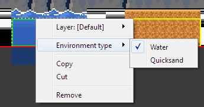
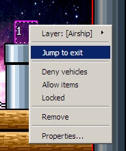
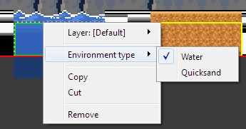
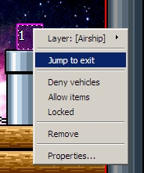

Each item have it's context menu. For righthander's mouse it can be opened by right mouse button (for lefthanders - by left mouse-button).
By context menu you can change the basic settings of one item or of all selected items. You can change layer of current item(s) and also available quick creation of new layer for selected item(s). For Warp point possible for fast jump to opposite point.


 



Invisible - The block will be invisible and will appear only on hit it. This flag useful for place on the map secret bonuses or make locks for move up.
Slippery - The block's top surface will be slippery.
Change contained NPC - Open NPC selection dialog for change block content.
Resize - available only for sizable blocks. Will switch to resizing mode for this block.
Set Direction - In this sub-menu you can change NPC's direction
Friendly - NPC will not communicate with playable chatacter and with other NPC's. Friendly NPC can'e be killed, can't hurt to player, can't be taken or grabbed. Playable character and other NPC's can't stay on top of friendly NPCs.
Not movable - NPC will be idle irrespective of its algorithm.
Set message - Open the message text editing dialog for change NPC's talk message.
Set as boss - (Inside SMBX this option named as "Legacy Boss") -
Environment type - Change the environment type of this item.
Resize - Switch to resizing of this item.
More...
Jump to Entrance/Exit - You will jump to opposite warp point, if it already placed on the map.
Deny vehicles - (Inside SMBX this option named as "No Yoshi")
Allow items - (Inside SMBX this option named as "Allow NPC")
Locked - Change the lock state of this warp.
See also:
Copyright © 2014-2015 Platformer Game Engine by Wohlstand project. All rights reserved.